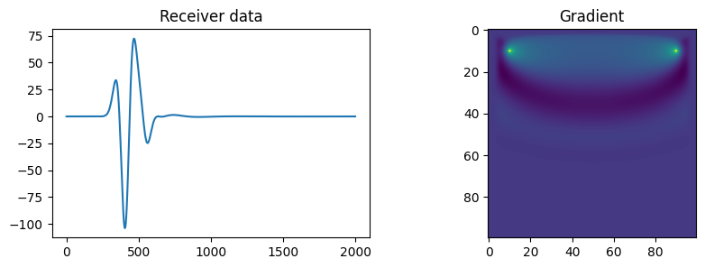
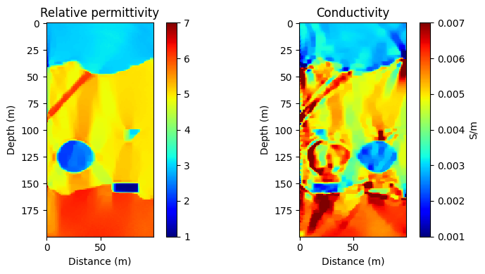
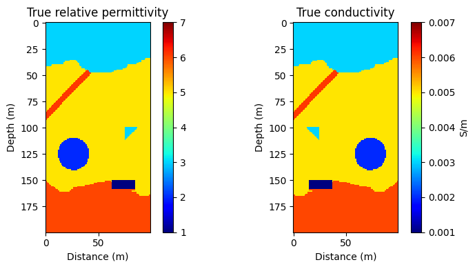
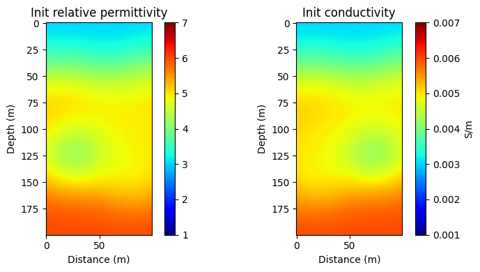
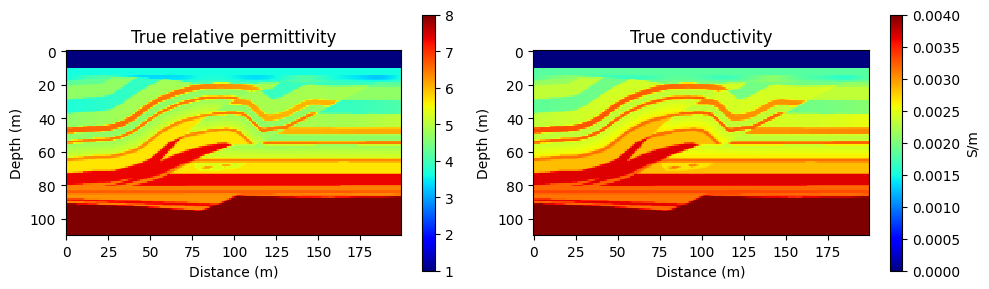
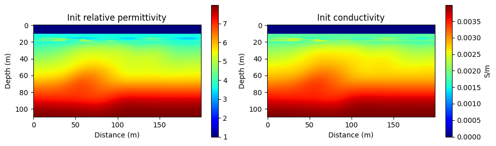
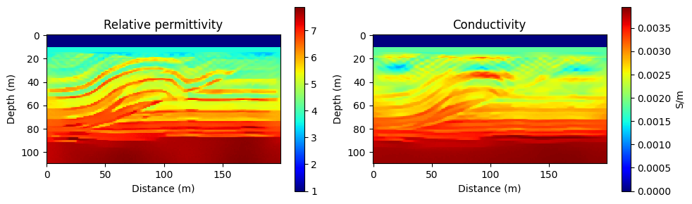

Small forward modelling test
Builds a two-material 2D model, creates a Ricker source, records a receiver waveform, and backpropagates a scalar loss to the relative-permittivity model.
Repository notebooks
Three current notebooks cover the path from a minimal forward solve to 2D and 3D dual-parameter inversion.
Builds a two-material 2D model, creates a Ricker source, records a receiver waveform, and backpropagates a scalar loss to the relative-permittivity model.
Configures a multi-shot acquisition, optimizes relative permittivity and conductivity with PyTorch, and applies total-variation regularization to a 2D subsurface model.
Defines a 3D survey with multiple shots and receivers, reconstructs relative permittivity and conductivity, and visualizes central slices of the model.
The examples directory also contains 2DFWImodel.npy and OverThrust.npy, which are consumed by the inversion notebooks as model inputs.
No synthetic website-only results are shown here; each image comes directly from the versioned Fig/ directory.

Receiver data and the relative-permittivity gradient from the documented small test.

Dual-parameter inversion result for relative permittivity and conductivity.

Reference relative-permittivity and conductivity models used for the repository comparison.

Initial relative-permittivity and conductivity models before inversion.

Repository-provided reference slice for the documented 3D FWI comparison.

Repository-provided starting slice before the documented 3D inversion.

Repository-provided reconstructed slice from the documented 3D FWI example.
Clone the repository, install the package dependencies, and select a notebook appropriate for the available CPU or CUDA environment.